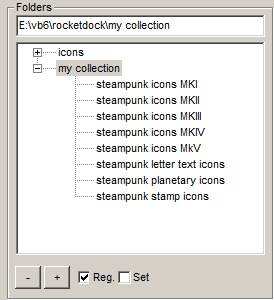
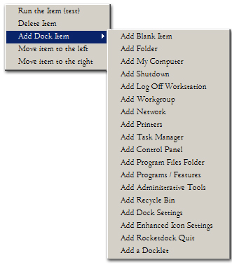
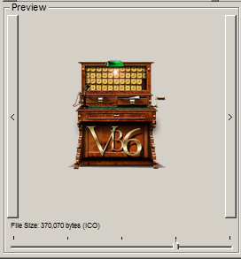
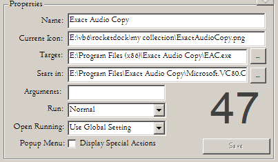
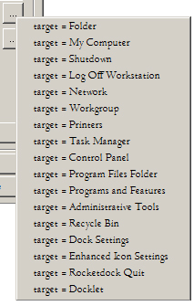
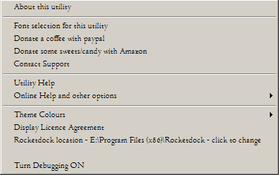

This utility is a functional reproduction of Rocketdock's original
settings screen. The design is limited to enhancing what Rocketdock
already provides. This will make the utility familiar to Rocketdock
users.
Unfortunately, Rocketdock's settings screen has a
few limitations.
One of the limitations is the extended time
Rocketdock can take to
respond to a right-click on an icon in the dock. As this is how you
change
the appearance or the functionality of any
Rocketdock
icon, a delay here impedes your use of the tool.
Rocketdock has to
read its entire stored library of .ICO or.PNG
files so it can display a graphical selection of thumbnail icons for
the user to choose from. This does not affect standard operation on a
few icons but when
your custom icon collection consists of hundreds of image files, a
right click can take 20-30 secs to complete (based on a typical
core2duo with
a
2.5ghz CPU with an SSD). Even on newer, faster systems there is still a
many-second
delay while each icon is deciphered and stored in the 'cache'.
Library folders such as the British Library collection consists of over
1,500 icons, so you can imagine using a folder
such as these, the subsequent delay would prove
a serious bug that affects Rocketdock's usability. In fact I set out to
re-write Rocketdock's settings screen and resolve this single bug but
in so doing I enhanced what it provides in general.
This utility improves upon the original in certain areas:
- You can flip to the next Rocketdock item without having to
leave the settings screen completely, as before.
- It indicates by number which Rocketdock item is currently
selected.
- The user can delete unwanted icons directly from the file
thumbnail display.
- The icon preview can be resized so the user can see how the
icon will look in the dock.
- There are tooltips for all controls (before there were
none).
- There is now a readily available help facility.
- The images in the thumbnail view are now more visible at
64x64 rather than 32x32 as they were before.
- The user can flip between file list and thumbnail view as
it suits them.
- The new "get more" button is no longer a dead link but
instead
takes you to a useful location where there are a lot more icons for the
user to download.
- There is a working icon type filter allowing you to select
just one type of icon. The old drop-down was non-functional.
- The code is open source so that a user can change the
utility themselves.
- The user can refresh the file list at any time if there
have been any changes to a folder.
- The utility saves copies of the settings.ini file so that
you can always revert your dock back to an earlier state.
- There are many more icon options for automatically creating
icon entries.
- It provides a steampunk library of various unique icons.
- The dock is still fully functional while this utility is
operating.
- It runs many times faster on the critical icon thumbnail
view, taking less than one second rather than 2-3 secs or much more.
Note: If you hover your mouse cursor on the various
components that comprise the utility a tooltip will appear that will
give more information on each item. There is a help button on the
bottom right that will provide further detail at any time.
This program is available in two flavours. The first is a VB6
version, this is the original. The second is a VB.NET version. The two
are functionally the same, in almost all respects. The choice
of which version to use is entirely up to you.
The VB.NET version was created to future-proof this utility but the VB6
version should work on Windows 10 for the 'foreseeable future'. Note
that the VB6 version will also operate on ReactOS, a 32bit
Windows clone. The VB6 version is of course 32 bit as that is all a VB6
application can be. Some see this as a limitation. It is not because
of course, 32-bit applications run just fine on 64-bit Windows 7, 8 and
10. In any case, this program has no need to be a 64bit program as it
does not
require anywhere near the 4gb of RAM that 32bit applications can
address, in fact it averages just 9mb of usage
even with lots of icons displayed.
If you really do care about the 64bit thing,
then run the .NET version. Personally I prefer the VB6 version, I know
them both inside out and VB6 is just 'better', easier to code and more
fun...
Folders

At the top left you will see a list of all the
folders you currently have
available to you. This display is called a treeview. The top folder is
named 'icons'.
That folder is typically located at: C:\Program
Files\RocketDock\Icons
(default location).
The folder beneath that is named "My Collection" and
it
contains the Steampunk icons that are packaged with this tool. You can
select these folders by clicking on any of these folders and
the
icons within each will be displayed.
Beneath this location lies any custom folders of your own that
you
wish to add. Initially there will be none but you can add any icons to
this folder and have them available to select as you choose.
The - and + buttons allow you to add and remove your own icon folders.
They will be remembered when the tool is next re-opened.
Two small tick boxes indicate how Rocketdock is currently
saving its
settings, either to a file or the registry, this is for information
only.
Icons

This pane (on the top right) will show you a preview of any
icons
available
in the folder you have selected in the treeview. The drop down menu
below the Icons list allows you to select icon types (gif, png, ico,
bmp &c). A small red 'x' allows you to select a specific icon
file
for deletion. You can select one of three view types, a file list, a
large thumbnail view or a small thumbnail view. A right click on the
thumbnails gives you the alternative choice. A click on the small
filelist button (top right) selects the file list view. There
is a
refresh button to the right that will cause the icon list to be re-read
from the folder you have selected.
A single-click on any icon in the icon pane will show the icon
in larger size in the preview pane below.
A right-click on any icon in the icon pane will give you more
options, one of which selects the
chosen
icon for insertion into the icon map. The + button at the top right
does the same. The preview and the map will update and only a press on
the 'save' button is required. You can use left and right keys
to navigate through the icon thumbnails.
Icon Map

The icon map is analagous to the Rocketdock itself. The icon map is
hidden when the tool first starts. A click on a small down button
on the centre-right hand side of the tool will cause the icon map to
appear. The map is kept
hidden so that the overall look of the icon settings tool matches the
appearance of
the original Rocketdock icon settings screen. A single-click
on any
icon in
the icon map will show the icon in larger size in the preview pane
below. The icons in the map relate to the icons as shown in the
Rocketdock. They appear in the same order and will have the same
appearance. The icons are numbered from one upward. The dock can
contain as many as seventy icons or more depending upon how much you
intend to use Rocketdock. A right click on the map gives you more
choices, the option to add, delete or clone an icon as well as the
ability to
re-order the icons as you see fit.
You can navigate the icon map using the large left and right buttons,
the slider or using the keyboard cursor movement keys as well as
HOME/END.
There is a refresh button to the
right that will cause the map to be re-read from Rocketdock's own
settings. Note that this reads the icons directly from Rocketdock and
it will overwrite any of your recent changes. Press "save &
restart" to commit your changes before any refresh.
You can use left and right keys to navigate the dock. Other controls
consist of a slider, two large navigation buttons and an 'up' button to
hide the dock.
A right click on the map will bring up the following menu that will
allow you to add, delete, clone or re-order an icon in the map.:

Preview

This pane allows you to see which icon you have currently
selected
to view. These are selected from the icon map in the middle or the icon
pane at the top right. The size of the displayed icon can be modified
using the slider at the bottom. There are also two slim buttons on the
left and right which allow you to select the next or previous
icons, those subsequently displayed are the icons on the map. The size
of the image is displayed where it is appropriate to do so.
Properties

Here is where you change the item title, the target and other
special actions that are available. There is a large number on
the right hand side, that corresponds to the location of the icon in
the icon map. As you click the right or left button on the preview pane
that number will change accordingly. The icon indicated in the map will
also change.
- Name: Set the label that will
appear above your icon when your mouse cursor is hovering over the dock.
- Current Icon:
When you have selected an icon from the icon pane the
full path of the icon will appear here.
- Target: Set the target
location
of the item on your computer, this can be a file, folder, URL or
program.
Next to the target property field is a button that when pressed, will
disclose a file selection dialog allowing you to choose a target file,
program or image.
- Start In: This sets the
working directory for the target application if the target program
requires a default folder to operate within. See *1 below.
Next to the 'start in' property field is a button, that when pressed,
will
disclose a folder selection dialog allowing you to choose a target
folder.
- Arguments: Sets optional
parameters for the target application.
- Run: This sets the
minimised/maximised
state of the window when the item is launched from RocketDock.
- Open Running: This drop down
menu allows you to override the "Open Running Application Instance" on
a per icon basis. You get the choice of: "Use Global Setting,"
"Always," and "Never."
- Popup Menu: This enables
additional actions to be displayed in the RocketDock context
menu for the specific icon.
*1 A right click on the target button will provide a number of
alternative target options such as folder, network &c.

As you make changes to the above property fields ensure that
you click
"save" or your changes will be lost as you swwitch to the next icon.
Any icon changes will then appear
in the icon map. An icon will not appear in the map until save
is
pressed.
None of your changes will yet appear in Rocketdock itself until you
press
the "Save & Restart" button. The reason for this is that
Rocketdock does
not
read its settings except on startup. A press on this button causes
Rocketdock to close and restart for this to occur. Any changes you make
in this tool
must at some point be followed by a "save & restart". The
restart is very quick and causes your new
icons to appear in the dock straight away.

The backup button causes a backup of the settings.ini file to take
place, it also gives you the option of taking the user directly to the
backup folder
where the bkpSettings.ini
backups are stored. It then allows you to select a specific file to
restore. Once done, you can then press the "save & restart"
button and the
restored icon settings will re-appear in the Rocketdock.
A check box toggles the information dialog on/off. When it is selected
confirmation messages will be given before any radical change takes
place. Turn it on or off as you require.
The close button will read 'cancel' or 'close' depending upon whether
any changes have been made to an icons properties and if a save is
required. Once the save is done the button text will revert to 'close'.
The help button reveals a graphical help image.

Menus & Other Options
A right click here and there will bring up other menu options.
The main menu is disclosed when right-clicking on everywhere else.

Debugging
The final option in the right click menu is to turn Debugging ON
This runs a separate
binary, the persistentDebug.exe (a binary provided with this tool)
is only run when you turn debugging ON. I suggest you do not use this
utility unless you have a problem that is not easy diagnose. It is
a separate exe that my program talks to, sending the program's
subroutine entry points and other debug data to that window.When
you run it the first time, your anti-malware tool such as malwarebytes
will/may flag it as a possible malware. It is NOT. It seems that way to
the anti-malware because it is one program talking to another using
shared memory.
The code for the persistentDebug program was provided by Elroy on
the VBforums and you can have a look at the source any time. For the
moment, if you want it to run, bring it back from quarantine and add an
exclusion to your anti-malware tool!
Font Selection
Font Selection from the main right-click menu.

Only the font name and size will be accepted, all other variations will
be ignored.
The About Screen.

Other options include a
theme change
(only partially implemented), manually selecting an alternative
Rocketdock installation folder and
a debug option in case the program throws an error. Other menu options
provide information and social-media URLs.
The utility was created using VB6, Microsoft's once vaunted flagship
language. It used VB6 to prove it can be done and to reacquaint myself
with the technology. The utility has been migrated in parallel to
VB.NET
so there is a version without external dependencies. This help file
applies to either version as they are functionally identical.
VB6 Version Credits:
-
Shuja Ali
(codeguru.com) for his settings.ini code.
-
LA Volpe (VB Forums) for his transparent picture
handling.
-
KillApp code from an unknown, untraceable source, possibly on MSN.
-
Registry reading code from ALLAPI.COM.
-
Punklabs for the original inspiration and for Rocketdock, Skunkie in
particular.
-
Active VB Germany for information on the undocumented
PrivateExtractIcons API.
-
Elroy on VB forums for his Persistent debug window
-
Rxbagain on codeguru for his Open File common dialog code without
dependent OCX
- '
Krool on the VBForums for his impressive common control replacements
Built using: VB6, MZ-TOOLS 3.0, CodeHelp Core IDE Extender Framework
2.2 & Rubberduck 2.4.1 and Krool's replacement Controls.
VB.NET Version Credits:
- Shuja
Ali (codeguru.com) for his settings.ini code.
- Punklabs
for the original inspiration and for Rocketdock, Skunkie in particular.
Built using: VB.NET 2010, initially migrated from VB6 using VB Express (.NET 2008).
Some credit goes to the chaps on the VB forum who answered my
incessant questions without giving up on me. Not in any particular
order: si_the_geek, jmcilhinney, .paul, elroy, krool,
schmidt, passel, Shaggy Hiker, Chris.E, LaVolpe and Fafalone to name
but a few who have responded or commented.
Finally, credit to Harry Whitfield, Emeritus Professor, University of
Newcastle upon Tyne, for helping me with ideas, testing and being a
sounding board for my ideas. I would have done none of this without him
as he is my programming Yoda and my inspiration to do better.
Links
Licence:
Copyright © 2019 Dean Beedell
This
program is free software; you can redistribute it and/or modify it
under the terms of the
GNU
General Public Licence as published by the Free Software Foundation;
either version 2 of the
License, or (at your option) any later version.